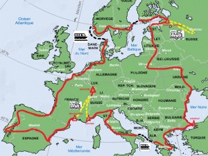
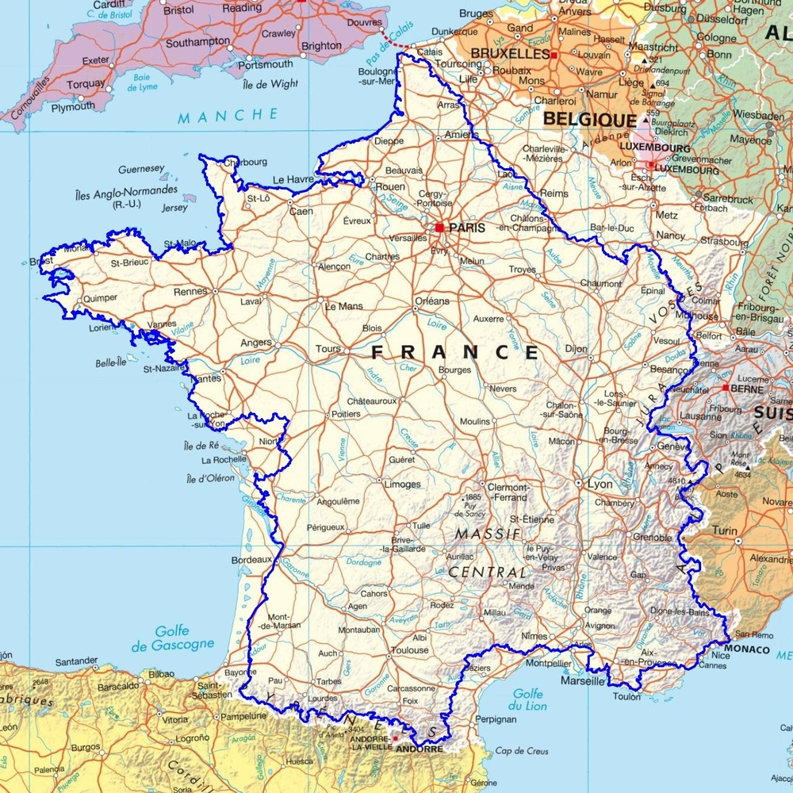

Depuis maintenant quelque année j’ai comme projet dans ma vie de réaliser un tour de l’Europ à pied en solitaire ou en duo. Ceci me permettra de découvrirez d’autre culture, repousser mes limites, rencontrer l’autre et faire plain d’autre découvertes.

Etape de construction :
Planification :
La planification d’un tel évènement est très complexe. Il y a énormément de paramètre et imprévue à prendre en compte. Je pence me laisser environ 5-10ans dans la vie active pour pouvoir économiser assez d’argent pour pouvoir vivre de manière autonome durant mon périple et pouvoir palier a tout éventualité comme des crise sanitaire, des conflit géopolitique et tout autre perturbation.
Durée :
La durée est relativement variable en fonction des pays traverser, si des sentiers européens de grande randonnée sont suivit, etc. Il faut compter un itinéraire de 20 000 à 30 000Km pour 4 à 5 ans. Bien entendue il vaut mieux prévoir des temps de battement.
Entrainement :
Je suis conscient que ce projet n’est clairement pas anodin et que j’ai besoin d’entrainement. Pour le moment j’essaie de trouver mes limites. A l’heur actuelle j’ai pué définir des limites sur des randonné de une journée. Dans les prochains temps je vais réaliser des parcours de plus en plus grand et de plus en plus long, tel que le GR 5, le GR20 jusqu’à réaliser le tour de France avec un temps estimer de 1 ans de parcours. Après ces différentes expériences je pourrai planifier de manière plus précise mon projet.

Partage :
Dans la vie d’un scout le partage est une part importante de chaque projet. Ce partage se fait tout au long du projet. Il commence dès la préparation avec des personne qui ont déjà réaliser ce projet. Il continue et prend pleinement le sens de partage avec les rencontres que je ferais. Puis pourra se finir à mon retour a mon point de départ géographique.
Communication :
Pour la communication je compte garder un lien avec mes proches. Cela me permettra également de pouvoir partager mon aventure et monter des projets en lien avec d’autre personnel tel que les scouts. Pour communiquer lors de mes rencontres je compte sur mon niveaux d’anglais, et avec un peu de chance je tomberai sur des personne qui parle également l’esperanto.